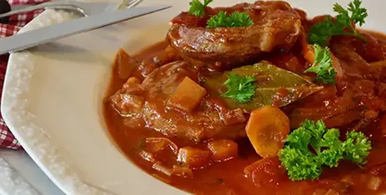
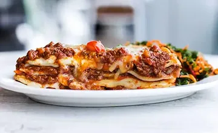
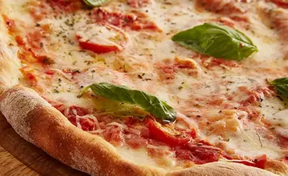
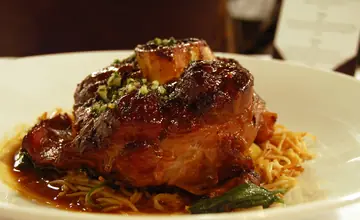

Ossobuco al Ragù: o clássico que pede tempo
Corte macio cozido lentamente com vinho branco, tomate e legumes até desmanchar no garfo. Conheça a história e o passo a passo do nosso ossobuco.
Ler mais
Feitas à mão, todos os dias

Massa leve e borda aerada

Receitas de família